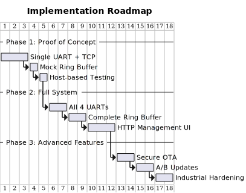

Solution Strategy
Quality Goals Foundation
The UART2ETH solution strategy is built upon the following critical quality goals derived from our system requirements:
| Quality Goal | Priority | Description & Success Criteria |
|---|---|---|
Performance |
High |
500 kbps sustained throughput per UART port with sub-5ms end-to-end latency for real-time applications. Support for up to 4 simultaneous UART-to-TCP bridges operating concurrently. |
Reliability |
High |
Industrial-grade operation with 99.9% uptime, fault tolerance mechanisms, and robust error handling suitable for mission-critical industrial environments. |
Security |
High |
Cryptographically secure OTA firmware updates with A/B partitioning, input validation, and protection against physical attacks in industrial settings. |
Maintainability |
Medium |
Open source GPL licensing, modular architecture enabling customization, comprehensive documentation for future developers. |
Interoperability |
Medium |
Support for two distinct operating modes (Gateway and Full Bridge), configurable protocol filters, and integration with diverse industrial equipment. |
Cost Effectiveness |
Medium |
Component cost under $10 for volume production while maintaining industrial-grade reliability and feature requirements. |
Microcontroller Selection Analysis
The foundational technology decision for UART2ETH is the choice of microcontroller platform. This decision directly impacts our ability to meet all quality goals and architectural requirements.
Candidate Evaluation Matrix
We evaluated three primary microcontroller candidates against our specific use case requirements:
| Evaluation Criteria | RP2350 | ATMega328P | ESP32 |
|---|---|---|---|
Architecture & Performance |
32-bit Dual Cortex-M33 @ 150MHz 520KB SRAM, 32KB Flash |
8-bit AVR @ 16MHz 2KB SRAM, 32KB Flash |
32-bit Dual Xtensa LX6 @ 240MHz 520KB SRAM, 4MB Flash |
UART Support |
2 hardware UARTs 12 PIO state machines (programmable for additional UARTs) |
1 hardware UART Limited software UART options |
3 hardware UARTs Robust concurrent operation |
Networking Capability |
No built-in networking Requires external Ethernet PHY (W5500) |
No built-in networking Requires external Ethernet PHY |
Built-in WiFi & Bluetooth No native Ethernet support |
Memory & Processing |
Sufficient for complex protocol filtering Dual-core enables UART/network separation |
Severely limited for requirements Single-threaded, insufficient for complex operations |
Excellent for complex operations Dual-core architecture |
Power Management |
Advanced power modes Efficient at industrial voltages |
Very low power consumption Good for battery applications |
Multiple power modes WiFi increases power consumption |
Security Features |
Hardware SHA-256 accelerator Arm TrustZone security OTP storage for secure boot |
No hardware security features Requires software implementation |
Hardware crypto acceleration Secure boot capabilities |
Industrial Suitability |
-40°C to +85°C operating range Industrial voltage tolerance EMC compliance ready |
-40°C to +85°C operating range Industrial proven |
-40°C to +125°C operating range Industrial applications proven |
Development Ecosystem |
Comprehensive documentation Strong community support C/C++, MicroPython, Rust support |
Mature Arduino ecosystem Extensive tutorials available |
Excellent development tools Arduino IDE compatibility Multiple language support |
Cost (Volume)* |
~$1.00 + $2.00 for W5500 Total: ~$3.00 |
~$2.50 + $2.00 for W5500 Total: ~$4.50 |
~$2.50 WiFi built-in, no Ethernet |
GPIO & Peripherals |
30 GPIO (RP2350A), 48 GPIO (RP2350B) Rich peripheral set |
23 GPIO pins Basic peripheral set |
34 GPIO pins Rich peripheral set |
Real-time Capabilities |
Deterministic PIO subsystem Dual-core real-time processing |
Limited real-time capabilities |
Good real-time performance FreeRTOS support |
Strategic Decision: RP2350 Selection
Decision: We selected the Raspberry Pi RP2350 as the microcontroller platform for UART2ETH.
Primary Rationale:
-
UART Scalability: The RP2350’s unique Programmable I/O (PIO) subsystem provides unmatched flexibility for implementing up to 4 dedicated UART interfaces with custom timing and protocol requirements. The 12 PIO state machines can be configured as additional UARTs beyond the 2 hardware UARTs.
-
Security Requirements: Hardware-accelerated SHA-256 and Arm TrustZone security architecture directly address our secure OTA update requirements. The ATMega328P lacks hardware security features entirely.
-
Performance Architecture: Dual-core Cortex-M33 @ 150MHz provides sufficient processing power for concurrent UART handling and TCP protocol processing while maintaining deterministic real-time performance.
-
Cost Effectiveness: At ~$3.00 total system cost (including W5500 Ethernet PHY), the RP2350 solution is the most cost-effective option for our industrial networking requirements.
-
Industrial Reliability: Operating temperature range (-40°C to +85°C) and robust electrical characteristics meet industrial deployment requirements.
Alternative Analysis:
ATMega328P Rejection: - Insufficient processing power for 4 concurrent UARTs + TCP processing - Limited memory (2KB SRAM) inadequate for networking stack and packet buffering - Single UART hardware severely limits our core functionality - No hardware security features compromise OTA update integrity
ESP32 Rejection: - Built-in WiFi creates unwanted security attack surface for industrial environments - Lacks native Ethernet support, requiring same external PHY as RP2350 - Higher power consumption unsuitable for some industrial deployments - While processing power is excellent, the integrated wireless capabilities are unnecessary overhead
Risk Mitigation: - External Ethernet Dependency: W5500 PHY chip is mature, well-documented, and widely deployed in industrial applications - Newer Platform Risk: RP2350 builds on proven RP2040 architecture with extensive documentation and community support
Technology Strategy
Core Technology Stack
| Technology Area | Strategic Decision & Rationale |
|---|---|
Microcontroller Platform |
RP2350 (Dual Cortex-M33 @ 150MHz) - Provides optimal balance of performance, cost, security features, and GPIO flexibility for our 4-UART requirements |
Networking Hardware |
WIZnet W5500 Ethernet Controller - Hardware TCP/IP stack offloads networking processing from main CPU, proven industrial reliability, SPI interface |
Development Framework |
Pico SDK (C/C++) - Official Raspberry Pi SDK provides direct hardware access, real-time performance, comprehensive documentation and examples |
UART Implementation |
Hybrid Hardware + PIO UARTs - 2 hardware UARTs for primary connections, PIO state machines for additional UARTs with custom protocol timing |
Protocol Architecture |
Pluggable Filter Framework - Modular protocol filter system allowing custom packet processing and optimization without core system changes |
Security Implementation |
Hardware-accelerated cryptography - RP2350 SHA-256 acceleration for firmware signature verification, TrustZone for secure boot process |
Memory Management |
Static allocation with ringbuffers - Predictable memory usage, real-time performance, efficient buffering for UART and network data |
Architectural Patterns and Design Principles
Dual-Core Architecture Strategy:
Key Design Patterns:
-
Producer-Consumer Pattern: Core 0 produces processed UART data, Core 1 consumes for network transmission
-
Plugin Architecture: Protocol filters as loadable modules for different serial protocols
-
State Machine Pattern: Connection state management for TCP sockets and UART sessions
-
Observer Pattern: Event-driven configuration updates and status monitoring
Quality Achievement Strategy
Performance Implementation
| Performance Requirement | Architectural Mechanism | Validation Approach |
|---|---|---|
500 kbps UART throughput |
Hardware UARTs + optimized PIO programs, DMA transfers, zero-copy buffer management |
Automated throughput testing, oscilloscope signal validation |
Sub-5ms end-to-end latency |
Dedicated real-time core, interrupt-driven processing, minimal buffering for latency-critical data |
Real-time latency measurement, timing analysis |
4 concurrent UART bridges |
Dual-core separation, independent PIO state machines, lock-free inter-core communication |
Stress testing with all 4 ports active simultaneously |
Network efficiency |
Hardware TCP/IP stack (W5500), protocol filtering to reduce packet overhead, configurable buffering |
Network traffic analysis, bandwidth utilization monitoring |
Security Implementation Strategy
Secure OTA Update Architecture:

Security Mechanisms:
-
Hardware Cryptography: RP2350 SHA-256 accelerator for firmware signature verification
-
A/B Partitioning: Atomic firmware updates with automatic rollback on failure
-
Secure Boot: TrustZone-based boot process with firmware integrity verification
-
Input Validation: All network and UART inputs validated against buffer overflows
-
Access Control: Configuration interfaces protected with authentication
Reliability Implementation
| Reliability Mechanism | Implementation Strategy |
|---|---|
Fault Detection |
Watchdog timers, CRC checks on critical data structures, health monitoring of all subsystems |
Error Recovery |
Automatic UART/TCP connection re-establishment, graceful degradation when individual ports fail |
Data Integrity |
End-to-end checksums, duplicate detection, ordered delivery guarantees for critical protocols |
System Monitoring |
Real-time status reporting, diagnostic interfaces, comprehensive logging for troubleshooting |
Graceful Degradation |
Individual UART ports can fail without affecting others, network issues don’t impact local UART operation |
Implementation Strategy
Development Approach
| Implementation Aspect | Strategy & Rationale |
|---|---|
Development Methodology |
Test-Driven Development with continuous integration - Critical for industrial reliability, extensive automated testing at component and system levels |
Modular Architecture |
Component-based design - Protocol filters, UART drivers, network stack as independent modules enabling parallel development and testing |
Hardware Abstraction |
HAL-based design - Hardware abstraction layer enables unit testing and future platform migration while maintaining real-time performance |
Configuration Management |
Runtime configuration with persistence - Web-based configuration interface with EEPROM storage, enabling field deployment without recompilation |
Implementation Phases

Phase 1 Success Criteria: - Single UART-to-TCP bridge operational - W5500 Ethernet controller fully integrated - Basic throughput testing (100 kbps minimum)
Phase 2 Success Criteria: - All 4 UART ports operational simultaneously - Protocol filter framework with 2 example filters - Web-based configuration functional
Phase 3 Success Criteria: - Secure OTA updates with A/B partitioning - Full 500 kbps throughput achieved - Industrial environmental testing completed
Strategic Decisions and Trade-offs
Major Architectural Decisions
| Decision | Rationale | Trade-offs Accepted |
|---|---|---|
External Ethernet PHY (W5500) |
Hardware TCP/IP stack reduces CPU load, proven industrial reliability, simplifies networking code |
Additional BOM cost (+$2), extra PCB complexity, dependency on external component |
Dual-core separation |
Real-time UART processing isolated from network stack, deterministic performance, parallel processing |
Inter-core communication complexity, careful synchronization required |
PIO for additional UARTs |
RP2350 unique capability, flexible timing, cost-effective vs additional UART chips |
Custom development effort, PIO programming complexity vs standard UART libraries |
Static memory allocation |
Predictable behavior, no fragmentation, real-time guarantees, industrial reliability |
Higher memory usage, compile-time memory planning, less flexible than dynamic allocation |
GPL open source licensing |
Community contributions, transparency for security auditing, competitive advantage |
Competitors can use our innovations, potential customer licensing concerns |
Risk Assessment and Mitigation
Strategic Risks
| Risk | Probability | Impact | Mitigation Strategy |
|---|---|---|---|
RP2350 supply chain |
Low |
High |
Multiple supplier relationships, stockpile critical components, design for alternative MCU if needed |
W5500 discontinuation |
Low |
Medium |
Alternative Ethernet PHY options exist (ENC28J60, KSZ8081), modular design enables replacement |
Performance requirements |
Medium |
High |
Early prototyping and testing, performance benchmarking at each development phase |
Industrial certification |
Medium |
Medium |
Early engagement with certification bodies, design for compliance from start |
Real-time determinism |
Low |
High |
Dedicated real-time core, extensive timing analysis, automated regression testing |
Architecture Evolution Strategy
Planned Evolution Path
-
Enhanced Protocol Support: Additional protocol filters for Modbus, DNP3, and other industrial protocols
-
Advanced Security: HSM integration, certificate-based authentication, encrypted communication channels
-
Performance Scaling: Optimization for higher UART speeds, additional parallel processing
-
Cloud Integration: Optional cloud connectivity for remote monitoring and management
-
Edge Computing: Local data processing and analytics capabilities
Future Platform Considerations
The modular architecture enables future migration to higher-performance platforms while preserving the core design:
-
RP2354 (with integrated flash): Direct upgrade path with 2MB on-chip flash
-
Cortex-M7 platforms: For applications requiring higher processing power
-
RISC-V alternatives: Long-term open hardware strategy
Conclusion
The RP2350-based solution strategy provides an optimal balance of performance, cost, security, and industrial reliability for the UART2ETH system. The key strategic decisions—RP2350 selection, external Ethernet PHY, dual-core architecture, and modular design—directly address our quality goals while maintaining cost-effectiveness and future flexibility.
This strategy positions UART2ETH as a competitive, reliable, and maintainable solution for industrial UART-to-Ethernet bridging applications, with a clear evolution path for future enhancements and market requirements.
Feedback
Was this page helpful?
Glad to hear it! Please tell us how we can improve.
Sorry to hear that. Please tell us how we can improve.